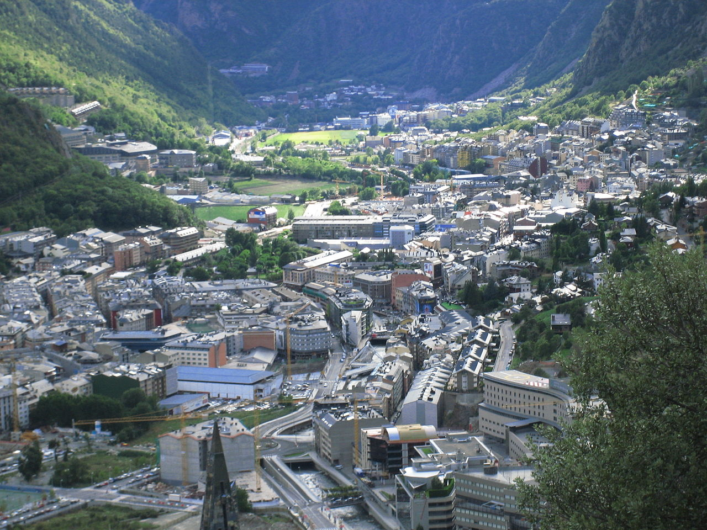

Andorra la Vella
- Casa de la Vall
- Avenida Meritxell
-
Rec del Solà

A lo largo de los dos lados del valle de Andorra la Vella, discurren dos caminos a través de las laderas del valle.
El Rec del Solà, y el Rec de l´Obac. El Rec de l´Obac se encuentra en la parte sombría del Valle, mientras que en el Rec del Solà da el sol todo el día.
Os recomiendo recorrer el camino del Rec del Solà, el cual comienza justo pasado el colegio Sant Ermengol, y se compone de 4 kilómetros planos que os permitirá disfrutar de unas vistas panorámicas de Andorra la Vella, la ciudad entre montañas.
A lo largo del camino encontraréis varios bancos desde los cuales podréis sentaros a relajaros y descansar un rato, o hacer un brindis al atardecer.